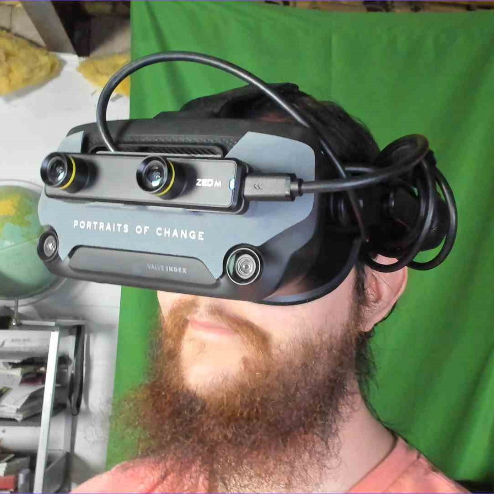

Thomas Graves
Creator
Learn morePortraits of Change is a music-technology project developed by me, Thomas Graves. Sometimes, I write in the first person like on this page to talk about my project. Though mostly I write in the third person, because Portraits of Change isn't just about me. It is about the musicians we play with, the technology experts we reach out to and collaborate with, and of course the audience and our wonderful supporters. This page is still a work in progress, but I intend to have a working list of all the collaborators and musicians that have contributed toward this project. Check back soon, because it will be frequently updated! If you would like to learn more about me, check out my Artist Profile down below, and feel free to check out the other musicians and artists who have collaborated with us and who wanted to be recognized on this page. Thank you so much for checking out my project!!!
This section lists the wonderful musicians who have played with us, either in live events or in video tests. I have worked with people I have met through my university music studies, and look forward to collaborating with more musicians to bring their sound to light and discover new sounds together!
Ivan Acurio
Jordan Barney
Damion Kudel
Gerad Ortiz
Noah Suazo
This section lists the individuals who have directly worked with me and helped me make Portraits of Change a reality. Whether I had questions or needed help with code, Unity, or music technologies like MIDI, these individuals were paramount to the success of the project. Thank you to our technology collaborators, and I hope that this list grows more in the future!
Sean Mansell Twitter
Here we have specific pages with bios of the musicians and artists that would like to be featured on this page!

Creator
Learn more
PoC Session Musician
Learn more
PoC Session Musician
Learn more